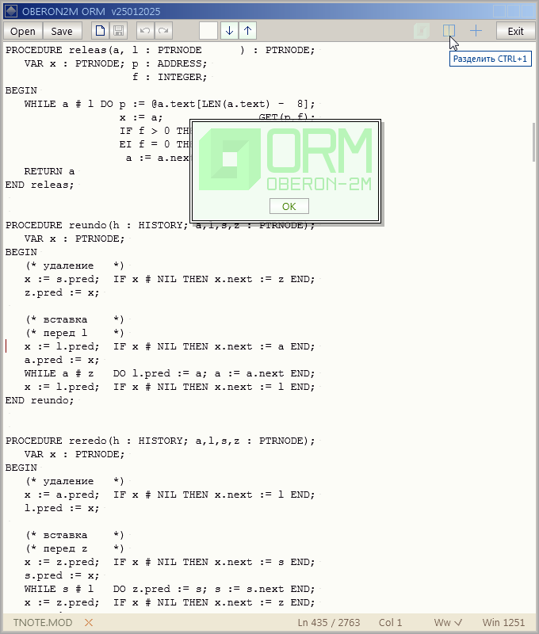
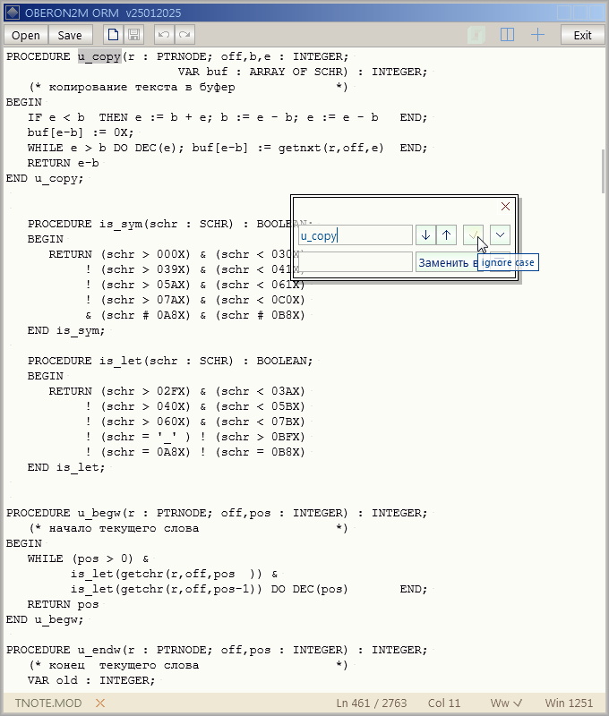
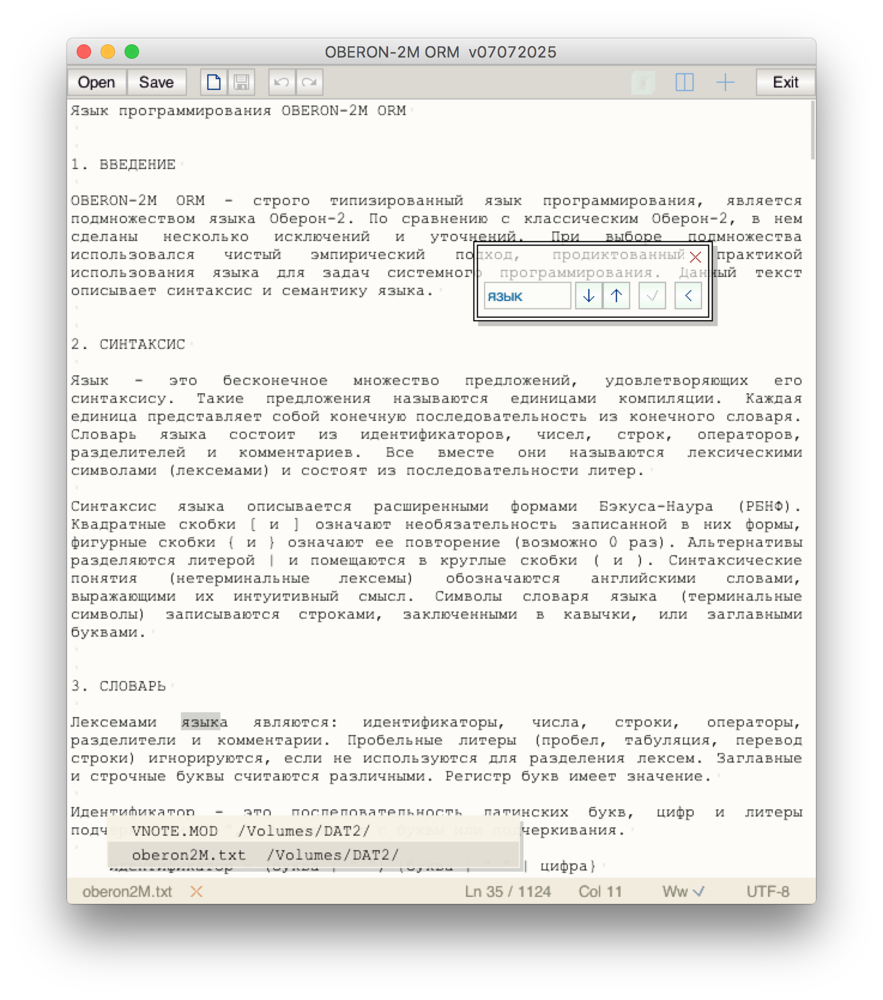
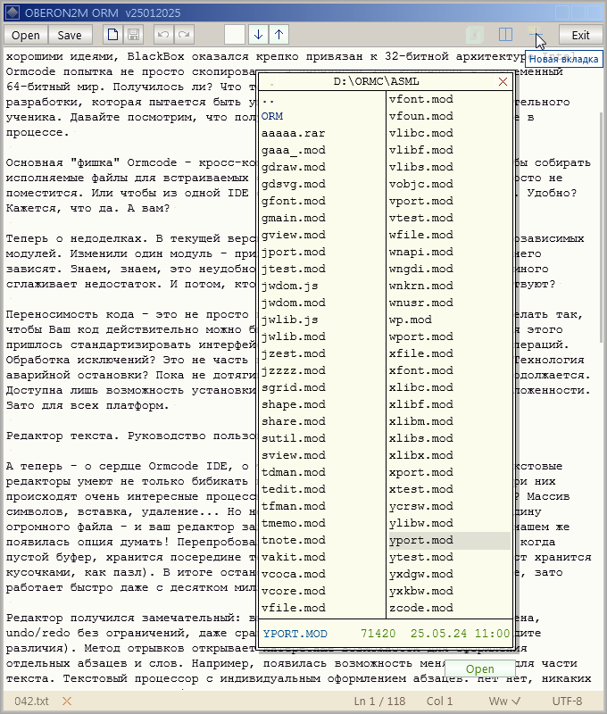
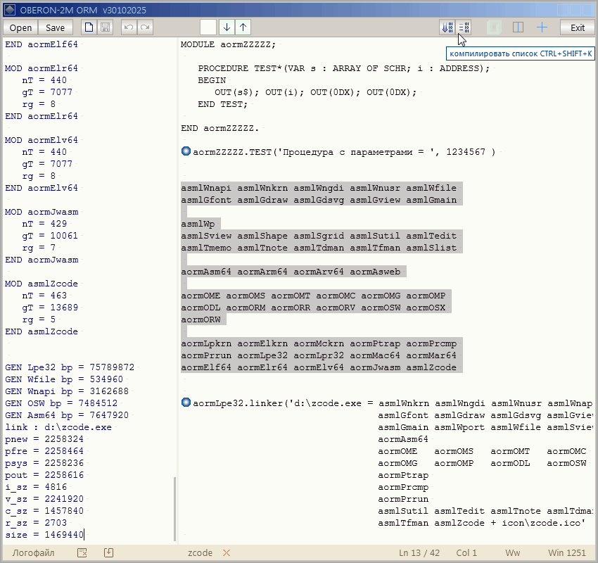

Начнем с главного. Ormcode - это не просто очередная IDE, это 64-битная расширяемая система программирования, которая умудряется быть полностью автономной. Да-да, никаких сторонних зависимостей, скомпилированная и собранная на самой себе, даже компилятор написан с нуля. Представьте себе - целый мир в одном файле и подключаемые модули размером чуть больше 2 Мб! Хотите верьте, хотите проверьте, но полная компиляция и сборка всех модулей системы на старом ноутбуке занимает меньше 3 секунд. Не верите? А зря!
Прототипом послужил BlackBox Component Builder - система, в которой реализованы передовые идеи, не потерявшие актуальности и сегодня. Но, как это часто бывает с хорошими идеями, BlackBox оказался крепко привязан к 32-битной архитектуре Intel. Ormcode попытка не просто скопировать, а перенести эти концепции в современный 64-битный мир. Получилось ли? Что то, да. А в остальном Ormcode - среда разработки, которая пытается быть умной, но пока больше похожа на старательного ученика. Давайте посмотрим, что получилось, а что... ну, скажем так, еще в процессе.
Основная "фишка" Ormcode - кросс-компиляция. Зачем? Ну... например, чтобы собирать исполняемые файлы для встраиваемых систем, где сама среда разработки просто не поместится. Или чтобы из одной IDE собирать проекты для разных платформ. Удобно? Кажется, что да. А вам?
Теперь о недоделках. В текущей версии - нет раздельной компиляции взаимозависимых модулей. Изменили один модуль - придется перекомпилировать все, что от него зависят. Знаем, знаем, это неудобно. Но! Быстрая пакетная компиляция немного сглаживает недостаток. И потом, кто сказал, что идеальные системы существуют?
Переносимость кода - это не просто красивые слова. Ormcode старается сделать так, чтобы Ваш код действительно можно было переносить между платформами. Для этого пришлось стандартизировать интерфейсы для всех платформенно-зависимых операций. Обработка исключений? Это не часть компилятора, а подключаемый модуль. Технология аварийной остановки? Пока не дотягивает до BlackBox, работа над этим продолжается. Доступна лишь возможность установки trap ловушек произвольной глубины вложенности. Зато для всех платформ.

А теперь - о сердце Ormcode IDE, о текстовом редакторе. Оказывается, текстовые редакторы умеют не только бибикать и не давать выйти из программы, внутри них происходят очень интересные процессы. Казалось бы, что может быть проще? Массив символов, вставка, удаление... Но нет! Попробуйте вставить букву в середину огромного файла - и ваш редактор задумается как студент на экзамене. В нашем же появилась опция думать! Перепробовали разные подходы: и Gap Buffer (это когда пустой буфер, хранится посередине текста), и Piece Table (это когда текст хранится кусочками, как пазл). В итоге остановились на последнем - хоть и сложнее, зато работает быстро даже с десятком миллионов строк. Ну не чудо ли?Редактор получился замечательный: выделение, перетаскивание, поиск, замена, undo/redo без ограничений, даже сравнение файлов есть (нажмите F9 и увидите различия). Метод отрывков открывает интересные возможности для оформления отдельных абзацев и слов. Например, появилась возможность менять шрифт для части текста. Текстовый процессор с индивидуальным оформлением абзацев. Нет нет, никаких излишеств. Ведь главное быстрое форматирование простых текстов. Или нет ... ?
Интерфейс. Только самое необходимое. Никаких боковых панелей. Минимальное количество действительно рабочих и востребованных кнопок. И статистическая инфа в подвале. Полный минималистический интерфейс - почти как дзен режим по умолчанию.
Настройка внешнего вида. Куда без нее. Просто до неприличия. Откройте в редакторе ini файл и задаете имя шрифта, размер, цвет, фон, положение при открытии, ну или доверьтесь выбору по умолчанию.
Рабочую область редактора можно разделить на две зоны. Удобно чтобы не тратить время на переключение между файлами. А ещё. Сравнение файлов. Нажимайте последовательно клавишу F9 и редактор подсветит все отличающиеся части двух файлов, открытых рядом. Конечно это не GIT. Но со своей задачей справляется.
Поддерживаются форматы файлов UTF-8, Win1251 и даже DOS. Правда для DOS можно сконвертировать только один раз ваши старые файлы. Обратная конвертация не сработает.

А вот с поиском и заменой, кажется, слегка переборщили. Поиск по точному совпадению, поиск без учета регистра. Замена во всем тексте, замена в выделенной части текста. Поле поиска в минимальном виде или развернутое в диалоговое окошко, перемещаемое по экрану. Столько вариантов! Но ведь удобно, правда?Есть и модные фишки: Темная тема - куда без нее. Лупа (F2) можно подсветить с увеличением букву, цифру или слово в нужном месте в нужное время. Зачем напрягать глаза. Удобно. А бабушкины очки, ну... можно вернуть бабушке. А что думаете вы? Может, чего-то не хватает?
Увеличить, уменьшить весь текст (Ctrl+, Ctrl-). Переход к строке (Ctrl+G) по номеру. Пожалуйста. Горячие клавиши. Они есть. Здесь без фантазии. Все как у старших товарищей.

Форматирование текста - старые добрые пробелы. Дешево и сердито. Хотите табы? Пожалуйста, если в начале строки, но имейте в виду - они ведут себя по-разному в разных редакторах.Включить или выключить перенос слов (Alt+Z). Режимы выравнивания (Alt+A). В любой момент поведение текста можно менять. Текст может быть выровнен по левому краю, по правому краю, центрирован или выровнен одновременно по левому и правому краям.
Теперь о файлах. Имена модулей содержат префикс папки - умно, но надо привыкнуть. Переключение между файлами быстрое. Файловый менеджер кроссплатформенный - все как на картинке. Текст, который Вы читаете тоже написан в ormcode редакторе.

Попробуйте сами. Скачать редактор (релиз 10.04.2026, сборка 10.04.2026). Вдруг понравится. Нашли баги? Не может быть! Шутка. Конечно, они есть - куда без них. Пишите, будем исправлять.
Скачать редактор Win intel Win arm
Скачать редактор Mac intel Mac м1
Скачать редактор Linux X11 Linux X11 arm Linux X11 risc-v
Скачать редактор Linux Wayland amd Wayland arm Wayland risc-v
Нет .. не убедили! Ваш любимый редактор лучше! Даже не будем спорить. Оставьте для Ormcode превращать Ваши исходники в исполняемые файлы. А тексты. Тексты пишите как Вам удобно, в Вашем лучшем редакторе. Оказывается, так тоже можно!

В чем фишка? Всего две кнопки плюс: "компилировать" и "компилировать список". Так просто! Да так просто! Вот такой Ormcode. Не идеальный, зато как тёплый ламповый проект. А под капотом - динамическая загрузка, кросс-компиляция, целый мир возможностей. И да, уже не просто! Скачать Ormcode (релиз 05.05.2026, сборка 14.06.2026).Хотите больше. Пишите модули расширения (у других они называются плагины) тут же компилируйте, подключайте. И не забудьте поделиться с другими. Если сочтете нужным конечно.
Авторы напоминают, что использование данного программного обеспечения возможно только в некоммерческих целях.